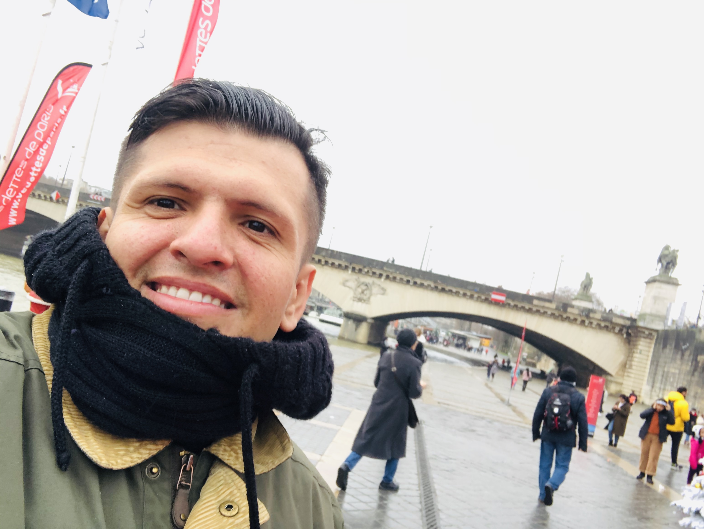

Carlos Andres Restrepo

Summary
I'm a fullstack software developer with expertise in both frontend and backend development
Education
- Bachelor of English - University of San Buenaventura (2016-2020)
- Bachelor of System Engeneering - University of UTEL
Work Experience
- Junior Developer | Quindielectricos SAS
April 2018 - Jule 2022
-
Contributed to the development of a content management system, improving client website management capabilities.
-
Collaborated with the testing team to identify and resolve bugs, ensuring smooth user experiences.
-
Participated in daily stand-up meetings to provide updates on project progress and address challenges.
-
Assisted senior developers in designing and developing web applications using HTML, CSS, and JavaScript.
Projects
-
Personal Portfolio Website: Developed a personal website using React to showcase projects, skills, and achievements.
-
Task Management App: Created a web-based task management application with CRUD functionality using MERN stack (MongoDB, Express.js, React, Node.js).
-
E-Commerce Website: Designed and built an e-commerce platform with shopping cart and payment integration using React and Redux.
Certificacions:
-
Certified JavaScript Developer | Code Institute | Date
-
React Fundamentals | Udemy | Date
Languages
-
English (fluent)
-
Spanish (native)
Other